Kernel Panic
{kind=link}
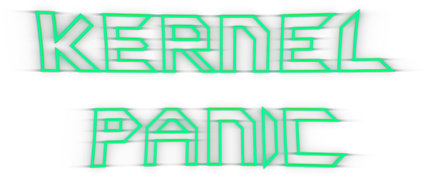
Overview:
For the latest news and/or assistance, try the KP forum or go to #kp when you log onto the lobby.
Kernel Panic is a game about computers. Systems, Hackers and Networks wage war in a matrix of DOOM! The only constraints are time and space; unlike other real time strategy games, no resource economy exists in KP.
All units are free in this game, every factory built will be spamming units at all times. You can build more factories, but only on pre-defined areas (geothermal vents). All that remains is pure strategy and tactics.
KP makes for a frantically fast-paced, action-oriented game, with a very unique graphical style.
Download links:
Current Version of Kernel Panic is 4.9
- Newcomers:
- If you run Windows (2000,XP,Vista,7,8,10):
- Here you can get a complete installer:
- Use it to install both Spring and Kernel Panic in one go.
- Then use the shortcuts created in your Start Menu or Desktop.
- If you run Linux:
- Get a Linux static build of the Spring engine from https://springrts.com/wiki/Download
- Get and unzip that file: https://web.archive.org/web/20230203213815/http://zwzsg.ddns.net/kp/zips/Kernel_Panic_4.9.zip
- Unzip both in the same folder, so that Kernel_Panic_4.9_Launcher_Linux is next to spring executable
- Run Kernel_Panic_4.9_Launcher_Linux
- Alternatively, running spring directly would bring a greenish menu once ingame
- For multiplayer or advanced options, run SpringLobby
- If you run Windows (2000,XP,Vista,7,8,10):
- Experienced Users:
- If you have already the Spring engine (or prefer to install it yourself): Here you can get a zip with the mod file, the maps, and a tiny executable for single player frontend. Unzip into your Spring root folder: https://web.archive.org/web/20230203213815/http://zwzsg.ddns.net/kp/zips/Kernel_Panic_4.9.zip
- If you are certain you have all the maps and just need a quick link to the mod file itself: https://web.archive.org/web/20230203214135/http://zwzsg.ddns.net/kp/mods/Kernel_Panic_4.9.sd7
Media:
Youtube Videos:
Still shots:


License:
Extracted from the Kernel_Panic_readme.txt file:
========-------------------------------------------- License: -------- - The content of the /mods/Kernel*.sd7 is Public Domain, save: /LuaUI/Widgets/kp_buildbar.lua /LuaRules/Gadgets/autohold.lua /LuaRules/Gadgets/Burrow.lua /LuaRules/Gadgets/game_spawn.lua which are GPL, taken from http://www.caspring.org or http://springrts.com - The maps Marble Madness and Direct Memory Access are Public Domain - The maps Major Madness and Speed Balls 16 Way status are unknown - The maps Central Hub, Corrupted Core, Dual Core, Quad Core were CC BY-NC-SA and are now CC-BY-SA https://springrts.com/phpbb/viewtopic.php?f=43&t=21331&p=401680#p397471 https://springrts.com/phpbb/viewtopic.php?f=43&t=27499&start=6 - The Spring engine is GPL, available from http://spring.clan-sy.com
Game Modes:
By default the aim is to destroy the homebase and all the minifacs of all opposing teams.
Other "mod options" available are:
- King Of The Hill : Keeps control of the map center for a given time to win.
- O.N.S. : Adds shields to buildings, preventing homebase rush.
- Save Our Mem : Unit leave "leaks" that must be reclaimed.
- Color Wars : Whoever controls the most territory when timer elapse wins.
- Heroes of Mainframe : You only control a very buffed up but single unit. Best used with "Pre-placed Minifacs".
- Rebalancing formula : Let you change the stat of any units of weapons without the hassle of making a mutator.
For details, read Kernel_Panic_readme.txt or click [?] next to each mod option in your lobby.
Units and Buildings:
System units:
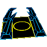 | The Kernel: You start with one of these. It can build all mobile units in the game. Has rapid auto-heal and lots of health. |
| The Socket: The socket is a factory which can only be built on a geothermal vent. It can solely build bits, and slower than the kernel can. It autoheals, and has a decent amount of health. |
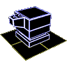 | The Terminal: This is a new structure that gets placed on geovents. It can dispatch a nuclear bomber once every 90 seconds that will deal about 16000 damage to a large target area, i.e. it destroys everything except factories. It does much less damage to the kernel and hole. The bomber can strike any position on the map, there is no defense. |
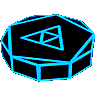 | The Assembler: The assembler is a construction unit. It can build sockets, but it cannot assist-build. Slow, little health. Equipped with a radar to detect mines and other cloacked units. |
| The Bit: Your basic attacking unit. Cheap, fast, small, not very much health. Is armed with a SPARCling laser. Can be built by a kernel or a socket. |
| The Byte: A large, strong, and slow attacking unit. Can holds it's own against many bits, as it has lots of health and a powerful gun. More armored when closed. Can plow through bad blocks. The byte has an alternate firing mode, the mine launcher, which throws 5 mines at the cost of much health. |
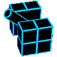 | The Pointer: An artillery unit. Its normal shot is not so useful against moving units, but can kill kernels and sockets pretty quickly. Is slow and has little health, so it needs protection. The pointer has an alternate firing mode, the NX Flag, which set a wide area ablaze for a minute, causing constant damage to all units, or buildings within it's range. |
Hacker units:
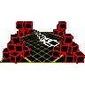 | Security Hole: The Hacker kernel equivalent. |
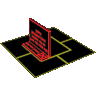 | Window: The Hacker socket equivalent. |
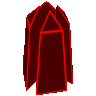 | Obelisk: This building is a stationary artillery weapon, it can fire an infection shot every 40 seconds (the obelisk has a pink fire on top when it's ready to shoot) that will cover a large area in poison. The poison does a bit of damage (about 1000) and turns any enemy that dies inside the cloud into a Virus. The weapon's range is fairly limited. Best used against stationnary herds of Bits/Bugs. |
| Trojan: This unit is your constructor as well as radar platform (needed for detecting mines and cloaked units), just like the assembler. It builds all the same stuff as the assembler, except it has the window instead of the socket and the obelisk instead of the terminal. |
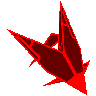 | Virus: A crappy little swarm unit. It cannot be built but is produced when killing enemy units with certain weapons. Namely, the Virus, the Worm, and the Obelisk. |
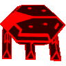 | Bug: The Hacker spam unit. The Bug is weaker than the Bit but can sense movement outside of its LOS. It has a stronger weapon and more range but cannot shoot at things behind it or through friendly units and won't take much damage before dying. The mine ability of the old bug has been removed. Instead it can now morph into the Exploit with the deploy button, or the bombard button. |
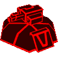 | Exploit: This is the new name for the bug cannon. It's a building the Bug morphs into with the deploy or bombard command. The Exploit is a stationary artillery emplacement that does more damage the further the target is away. Even more frail than the Bug, so don't let any foe come near. |
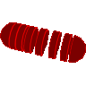 | Worm: The worm is a sneaky assassin, travelling cloacked, then surfacing only to kill many bits at once with its large area of effect weapon, which turn any slain units into virus. The worm large splash damage will damage your own units. However, it does practicaly no damage against other worms or virus. When cloacked, the worm does not automatically attack, you have to give attack orders manually. If you'd rather have your worms auto-attack even when cloacked, set autohold to off. The autohold setting of new worms is inherited from the Security Hole. |
| Denial of Service: Not an artillery, but close: fire a beam that stun units. For bigger targets it'll take longer to stun them so perform a DDoS (use multiple) to stun them fast. Once the DoS stops firing the target will quickly unfreeze. It moves faster than the pointer but causes a particle trail that can be seen from far away. |
Network units:
The network faction is built around mobility, its small factories (Ports) don't produce units openly but instead increment a virtual counter (the Buffer). Packets in the Buffer can be materialized at any teleporter unit (currently that means the Port and the Connection), it's also possible to dematerialize the Packets back into the Buffer by making them enter a teleport.
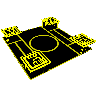 | Carrier: The base building, like a Kernel or Security Hole. |
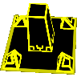 | Port: The production building. It puts Packets into the Buffer, to materialize them select the Dispatch command. Dispatch will send 12 Packets if available, you can hold ALT when giving the order to make the Port dispatch until the Buffer is empty. |
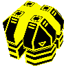 | Firewall: This building can cover units (affects friendly units in a certain radius around the target location) in a protective shield for 20 seconds. The shield halves all damage the unit receives and throws the other half back at the attacker. |
| Gateway: The constructor. It is lightly armed to help against enemy raids. |
| Packet: The basic light spam unit, it's weaker in combat than both competitors but much faster. |
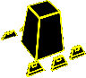 | Connection: Mostly a mobile teleporter (i.e. can dispatch Packets and let them enter like a Port). The Connection has decent armor and an arc beam that can do a lot of damage to single targets and has good range. It can defeat most large units one on one but engaging Bytes will probably result in pointer fire which the Connection cannot withstand and the arc beam is not optimal for engaging swarms. |
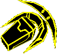 | Flow: An air unit. The Flow moves fairly slowly but can of course cross any terrain. It's equipped to attack light targets (spam units and fire support) but it's highly vulnerable to return fire. If you want to use them in open combat give them a meatshield and hope the enemy doesn't field long range units, Pointers, DoSes and Connections make short work of Flows if they hit. |
All side Units:
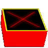 | The Bad Block: A tiny wall, built by Assembler/Trojan/Gateway. Blocks small units movement. Do not block shots however. Easily removed by the Debug or simply crushing them with a Byte or Connection. |
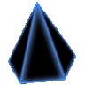 | The Logic Bomb: A mine that can be built by the Assembler/Trojan/Gateway. And also launched by Bytes. It takes out Bits & Bugs in a single blow, has a decent damage radius, and doesn't chain explode. Use with care, as the blast hurts your own units too. Limited to 32. |
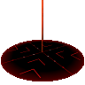 | The Debug: An easy way to clear an area of all mines and walls, this is a one shot weapon built by the Assembler/Trojan/Gateway. |
Playing Guide for System:
Playing Kernel Panic is fairly simple and quickly learned, but can be hard to master and can be very complex. It is recommended that beginners start with play the System faction, as they can be considered the least "gimmicky" of the factions.
One rather effective general strategy for a duel on small maps is to send three to five bits to destroy your enemy's early game units, and, to a lesser degree, for scouting purposes. This is most effective if they started with construction units, as this will likely cripple their plans for an early expansion, and gives you a slight head start. After the initial attack, if your scouting shows that your enemy started with offensive units, build a byte for defense, and place it between your Kernel and the hill. After that, build an assembler and use it to build a socket on one the three closest building locations, which should automatically start producing bits. After this, you should order your assembler to build more sockets on free spots close to it. It is crucial that all sockets' rally points are below them, as bits turning inside a socket will stall production until it is able to exit the factory. It is sometimes wise to repeat the prior process with one or two other assemblers. After this is done, construct about ten bits from your factor, and set your kernel to alternate between building bytes and pointers.
What units you build at your kernel, and what you use them for, is an important factor in winning. As buildings can't be resumed, sending in groups of bits to kill construction units creating buildings can be very effective at stopping expansion attempts. Building too many pointers, will result in them being destroyed by connections, bits and especially worms, due to their stealth. Also, bytes are easily destroyer by and pointers, and exploits. A good general purpose ratio seems to be to queue one byte and one pointer, but this will need adapting as the game develops, and depending on the enemy's play style.
Scouting is important too, as many enemies will leave their factories undefended, and knowing their build, and general unit use can help you in adapting the units you use to better fight them. Note that the Network can instantly spawn packets at any of their ports, or connections with their buffer system, meaning that all their factories should be considered defended. Single bits can be used to scout to find the enemy's current expansion attempts.
When attacking a Byte or Connection with bits, it is important to overwhelm it with large numbers of bits. For bytes, try to exploit a byte's blind spot directly under it, by moving bits into that area. If your byte is under attack, moving it backwards to keep the attacking units in it's shooting arc can help repel the attack. It is not recommended to engage a worm with bits, as it's attack will convert your bits to viruses on the worm's owner's side.
On Marble Madness, there are two main ways paths to victory. The simplest one is to control the hill and use pointers stationed on the hill to destroy the enemy's factories, and kernel. Gaining control of the hilltop will likely not be without resistance, because it requires a decent amount of time for units to reach the top of the hill, meaning most units involved will be spam units from your factories on it, and the fact that it will likely be highly contended. However, if you control it, you have a large advantage over the enemy as you can shell your opponents home base with ease. The other way is around the hill, which can be very effective if you control terrain you can use pointers to great effect. In both strategies, using pointers is the crucial factor. While they are hard to use correctly, they are game-winners as they destroy home bases and enemy units with ease.
Credits:
- Original concept by Boirunner
- About all the work done by KDR_11k
- Sounds by Noruas
- Maintenance by zwzsg
- Maps by Boirunner, Runecrafter, zwzsg, and TradeMark
- Some Lua interface upgrade based of jK and trepan code
Back to Games